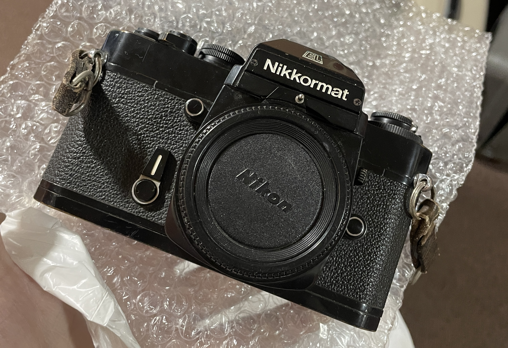
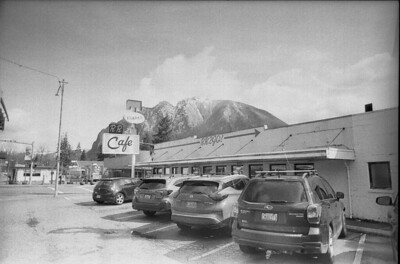

home | photography | opinions | MayaTel Home
photography

maya ventura, shot by victoria scott, january 2025
much like many other trans women with a drive to use art to shout into the void, i do hobbyist photography, both film and digital.
nearly all of my photos can be found on my flickr.
but hey, here's some more info, just for folks fascinated enough to click through.
gear
35mm film

Nikon Nikkormat EL (1972)
this is my daily use 35mm SLR.
this was Nikon's first attempt at a camera with electronic shutter control. it actually works decently well.
i bought this from my local camera store's discount table for $25. it was there because the exposure count window was entirely damaged to the point of invisibility. the solution was to pop out the exposure count window and clean it.
the prism is also very dented, but not enough to affect functionality. who cares, honestly.
my favorite image taken on this camera:

------

Nikon OneTouch 90s (2000)
this is a point-and-shoot from 2000.
this is an honestly entirely unremarkable point-and-shoot, although it is high end enough to have autofocus rather than fixed focus, which is why i bought it.
i bought this from the thrift store. if it works, it works.
i currently do not have a favorite image taken on this camera. i last used it in 2023, and have misplaced my negatives from then. i just shot a roll with it last week tho so check back
------
digital

Nikon D300 (2008)
this is my daily use DSLR.
this was Nikon's flagship DSLR from 2008 to 2009, when it was replaced by the D300s, which is the same sensor but with video capabilities. it was Nikon's flagship from 2009 to 2013.
i received this in a trade for some other gear. it is truly the most cromulent DSLR, even still.
my only complaint is that it uses CompactFlash. the APS-C sensor is a problem for some. i am not some.
my favorite image taken on this camera:
------

Nikon D70 (2004)
this is just some random DSLR.
this was Nikon's first consumer DSLR, packaged with an 8MP sensor and priced at $999.
the main reason i have it is because it was on the discount table at my camera store for $30 and used all the same lenses and batteries as my D300, so I said fuck it.
i'm someone who likes to experiment with old digital cameras. the main problem with this is that it's genuinely a perfectly cromulent camera.
my favorite image taken on this camera:

------

Nikon 1 V1 (2011)
this is my only mirrorless!
this was Nikon's flagship mirrorless, introduced in 2011 as a part of a whole new system from Nikon.
i don't really understand this thing. but it creates great images in a point-and-shoot style package, so i'm not complaining (unlike every photographer when Nikon announced this).
my friend Lucille gave me this as a gift, which i'm still very appreciative of, even if i've beaten this thing up pretty hard taking it everywhere as my backup camera.
my favorite image taken on this camera:

------
goofy-ass bullshit

Canon ELPH LT260 (2000)
APS APS APS APS APS!!!
i love shooting photos on the Kodak Advanced Photo System format. it's such a stupid thing that genuinely makes no practical sense, especially now that they've stopped making film...15 years ago.
paid $3 on eBay. works a treat.
my favorite image taken on this camera:
------

Fujifilm Instax mini 9 (201?)
it's a fucking instax. i got it from the thrift store for $10 and buy expired film when i find it. who cares.
i have many images taken on this that i like. they're all just me with friends, and i haven't scanned any.
------

Apple QuickTake 150 (1993)
what the fuck is this thing, man.
i have never taken a good image with this.
------
film
i've been in this hobby for a couple years now but i'm still just kinda experimenting with film stocks to find one i like.
everything listed down here is 35mm only - my take on APS film is "whatever I can find".
Perennial Good Choices: Ilford HP5 (pushed to 800), Kodak Portra (usually 800), Kodak Gold (400), and drugstore Fujifilm which is just respooled Kodak Gold anyway. they Just Work.
stuff i like that everyone else hates: Arista EDU Ultra 400
stuff that i've gotten good results from in the past but have soured on: ORWO Wolfen NC500 (400)
stuff that i've shot but could not possibly judge on the merits because it's horribly expired: Luckycolor 100 Super (exp. 2006), 3M ScotchColor (exp. 1990?), Fujicolor N100 (exp. 1972).
most of my color film is developed in the labs of Premier Imaging & Camera, Pittsburgh, Pennsylvania, with some more recent rolls developed in the labs of Panda Lab, Seattle, Washington.
black and white rolls are most frequently developed in the labs of TimeGeist Photographic, Seattle, Washington.
------
lenses
my lens situation is so fucked you have no idea.
if anyone reading this is in the giving spirit, please give me an 18-55 lens on the F mount please i need one so badly
no, really, though, my whole thing is currently so fucked it's not worth specifying. my primary lens on most of my Nikons is a Nikon DX 55-200 kit lens. which is fine, but not fun. and also means i need to be REALLY far back to shoot stuff.
------
people i've mentioned or used photos of here
Victoria Scott, Seattle, Washington
Emma Celeste Abitia, Seattle, Washington
Claire Violet, Seattle, Washington
Lucille Nguyen, Reno, Nevada
------
© Maya Ventura-
This webpage was last updated on June 2nd, 2025. Hosted on Github Pages. All original content is licensed under the MayaTel Labs Software License.